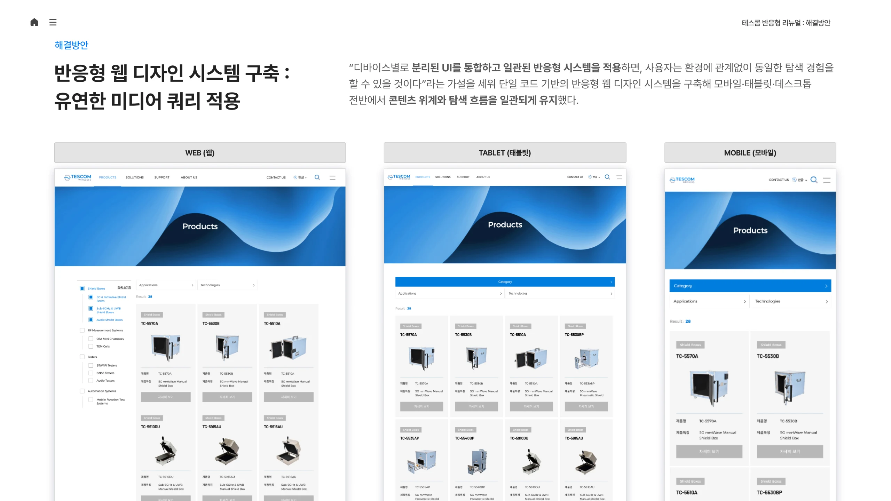
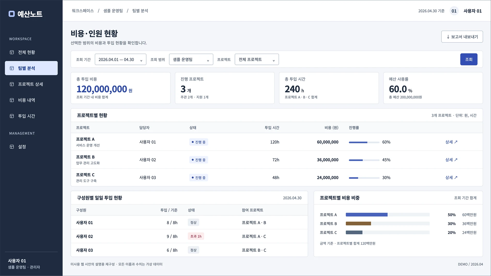
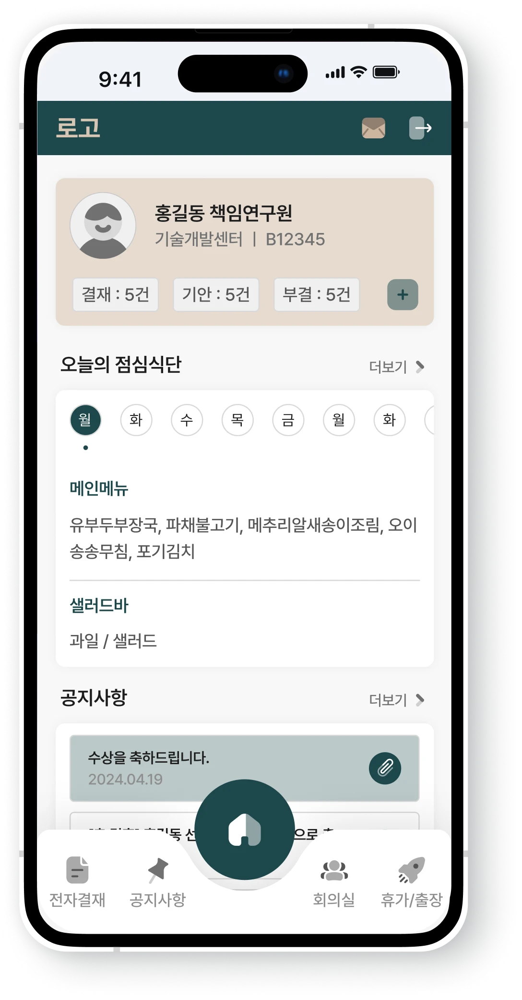
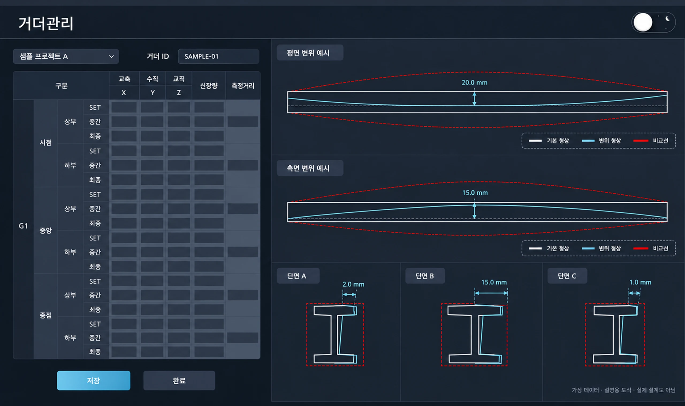

FIELD WORKFLOWUX/UI

현장 안전 기록(TBM)
종이 일지를 PC·모바일로 옮겼고, 운영 중 들어온 자료 열람 요청은 2일 만에 화면으로 반영했습니다.
- 결과
- 현장 인원 20명+ 월 20일+ 사용 · 수기 대비 작성 시간 약 20% 단축
- 결정
- 주요 파일 형식과 기타를 구분하고, 열람 상태별로 안내
- 담당
- PC UI 디자인·퍼블리싱 · 모바일 UI 디자인
SELECTED PROJECTS / 01—03
현장 안전 기록, 공통 UI 가이드, iOS 출시 앱을 소개합니다.
종이 일지를 PC·모바일로 옮겼고, 운영 중 들어온 자료 열람 요청은 2일 만에 화면으로 반영했습니다.

컬러 사용 역할과 입력·검색 등 반복 UI의 상태를 정리하고, Figma 가이드로 디자인했습니다.

개발자 1명과 반려동물 건강 기록·돌봄 일정 앱을 기획하고 출시했습니다.
MORE WORK / 04—10
기업 웹, 지도 기반 업무 UI, 사내 도구를 더 살펴볼 수 있습니다.

04 · RESPONSIVE WEB · UI RENEWAL
업무 프로젝트 · 제품·솔루션 탐색 구조 · 화면 크기별 분류·목록 배치

05 · WEB UX · BRAND UX · RESPONSIVE
업무 프로젝트 · 반응형 UI 디자인 · 퍼블리싱 참여 · 적용 사례·특징·솔루션 상세 순서

06 · MAP UI
지도 탐색 UI 디자인·퍼블리싱 · 세 메뉴안 제작·비교 · 배포 후 실제 업무와 시연·전시에 사용

07 · DATA UX
조회 조건·요약·상세 내역 설계 · 조회 구조를 보안용 PDF 보고서에 반영

08 · TEAM PROJECT · MOBILE WORKFLOW
팀 프로젝트 · 미배포 · 팀 내부 설계·구현 확인 · 회의실 예약·근태 신청 모바일 화면의 기획·UI·퍼블리싱 참여

09 · B2B PLATFORM · FIELD DATA
업무 프로젝트 · 웹·앱 설계·퍼블리싱 · 현장 측정 흐름 · 웹·앱 UI · 퍼블리싱

10 · PERSONAL PROJECT · AI-ASSISTED PROTOTYPE
개인 프로젝트 · 프로토타입 · 보드 UI · 카드 이동 · 작업 생성 프로토타입
ABOUT / 이한울
2020년 9월부터 6년간 UX/UI 디자인과 퍼블리싱 실무를 해왔습니다. 웹디자인과 퍼블리싱으로 시작해, B2B 제품의 정보 구조와 업무 흐름으로 설계 범위를 넓혔습니다.
기획자·개발자·엔지니어와 요구사항을 조율하며 메뉴, 기록 입력, 데이터 조회 화면을 구체화했습니다.
보유 역량 · 정보 구조 / 업무 흐름 · UI Design · Figma · HTML / CSS / SCSS · JavaScript · Git · Gitea · Photoshop · Illustrator
학습 중 · React
포트폴리오 PDFNEXT CHAPTER
UX/UI 디자이너 · 업무 서비스 UI · 웹 퍼블리싱